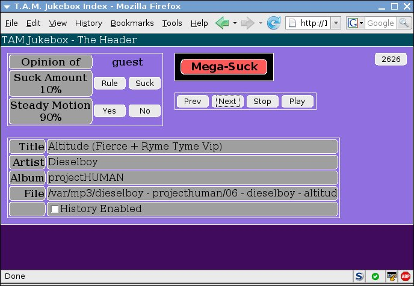
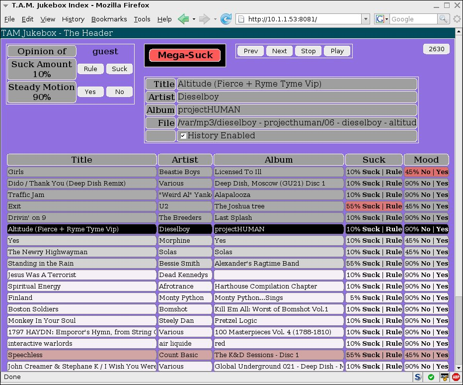
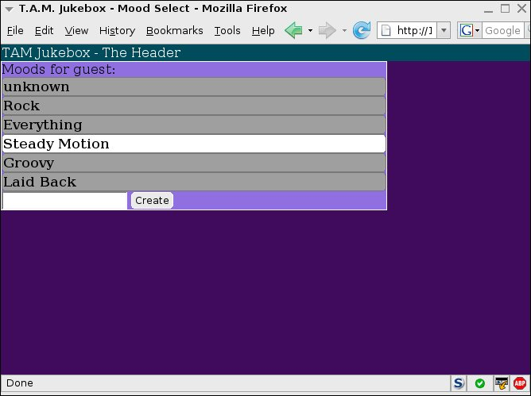

What Jukebox?
Tam (Track Attribute Manager) jukebox is a system that randomly picks
songs to play, and considers
every track you have to be in every playlist until you say otherwise.
Then it plays them with a relative frequency depending on how much
you think they suck. If a song sucks, you push the button, and the
jukebox learns a valuable lesson about your opinion.
People who need pictures should skip down to the
screenshots.
The initial user interface concept had just one button, called the
Suck button. While this was a good concept, it was missing several
things. Sometimes a song does not suck, but is inappropriate for your
current mood. Other times, you may not be the one listening. So, the
concept of mood and user were added.
And then it was realized that some
of these moods were actually not moods, for example "rockin" or
"Downtempo". And you might wish to combine them. So, while not yet
visible in the user interface, they are stored in the database as
various track attributes. And so, in fire and hot water, the
Track Attribute Manager engine is born.
System Requirements
If you have a modern linux, you can probably run it. If you run
windows, you will still have difficulty. It requires Mono and
(at this time) ESound. At one point, work was begun on a Windows
version of the audio output system, but it was a pain, and we
eagerly await completion of the overambitious and apparently
deadlocked GStreamer project.
Hardware-wise, it will run on a Pentium 3. However, you'll have to
turn off the more advanced leveling features, and your machine will
work pretty hard.
Big Plans
Oh, you know how every project seems to say "This project
aims to solve every possible user need and also
contains a dynamically scalable automobile trading system, recipe
manager, and open source replacement for Google and eBay."
I'm not quite that ambitious, but some of these ideas might be:
- Should calculate or use unique song ID's based on bitzi, the
freedb CD signatures, or some other standard, so that songs
will retain their information when moved.
- Should be some way to trade song information with peers.
- When used as a streaming radio station (this works!), it should
allow multiple users to log in. Song priorities can then be calculated
based on the opinions of various users, scaled according to how
important they are. Some listeners are more equal than others.
- Support for Ogg/Vorbis/FLAC. mp3 is so 1999.
Downloads
The code is being actively hacked at the moment. Any releases will be
made on the
SourceForge
download page when they are available. The code is always available
from SVN.
The Inevitable Screenshots
The main page looks like this. If you hit the big red button, the song
is reclassified as very sucky, and you will almost certainly never
hear it again, no matter what your mood. This is very useful with a
new, untrained installation.

Here is the main window with (future and past) history expanded.
You can see here that the Beastie Boys'
Girls was
rejected as not quite appropriate for the "Steady Motion" mood, while
U2's
Exit just sucked a little too much. The threshold is randomly
calculated for each song between 10 and 90%. So, if a song sucks
by 98%, you will NEVER hear it. (This may be adjustable in the future.)
I admit it: I don't think U2 is "all that". It doesn't mean
I don't like them. Really. Note that Dieselboy's album here is incorrectly
tagged, as the artist is not correctly stored in the track's artist
field.

The mood selection page in all its glory
